Arcane
Netflix original TV series • 2021–2024
Set between the prosperous city of Piltover and the industrial undercity of Zaun, Arcane follows a group of characters whose lives become intertwined through ambition, conflict, and the search for a better future. As Hextech brings the power of magic into the hands of humanity, old divisions begin to deepen and personal struggles become part of a much larger conflict. At its heart, the series explores the bonds between people caught on opposite sides of a changing world. Family, friendship, love, power, and progress constantly collide, shaping the choices that ultimately determine the fate of Piltover, Zaun, and those who call them home.
Piltover · The City of Progress
Zaun · The Undercity
Release: 2021–2024
Country: United States
Platform: Netflix
Episodes: 18
Genre: Animation, Action, Drama, Fantasy, Adventure, Sci-Fi
Creators: Christian Linke & Alex Yee
Directors: Pascal Charrue & Arnaud Delord
IMDb rating: 9.2 · TV-14
Trailer
Netflix Original · Nov 6, 2021
Arcane
League — Of — Legends
Season I
Vi and Powder were sisters before they were anything else. A single night tears that apart — and the years that follow turn one into a badge-carrying enforcer and the other into something the city doesn't have a name for yet. Around them, Piltover chases a new kind of magic that promises to change everything, and Zaun finds its own answer in a man willing to burn the city down to save it. Season one is the space between those two paths — and how long it takes before they cross again.
09
Episodes
03
Acts
~41m
Avg. Runtime
9.1
Imdb

Trailers
Season 1Recap Trailer
Official Trailer
Final Trailer
Netflix Original
Arcane — Season I
Episodes
Case File — Season One
09 Episodes
ACT I
Two cities, one heist
E1–E3 · Nov 6, 2021
ACT II
Progress has a price
E4–E6 · Nov 13, 2021
ACT III
The break becomes war
E7–E9 · Nov 20, 2021
sheet 01Act I
E1 ∙ Welcome to the Playground
Sat, Nov 6, 2021Orphaned sisters Vi and Powder bring trouble to Zaun's underground streets in the wake of a heist in posh Piltover.
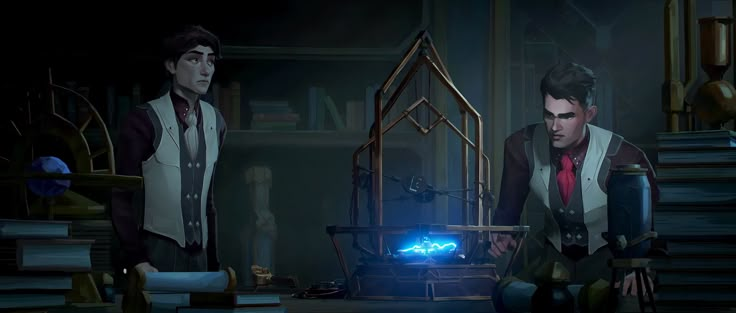
E2 ∙ Some Mysteries Are Better Left Unsolved
Sat, Nov 6, 2021Idealistic inventor Jayce attempts to harness magic through science — despite his mentor's warning. Criminal kingpin Silco tests a powerful substance.

E3 ∙ The Base Violence Necessary for Change
Sat, Nov 6, 2021An epic showdown between old rivals results in a fateful moment for Zaun. Jayce and Viktor risk it all for their research.
sheet 02Act II
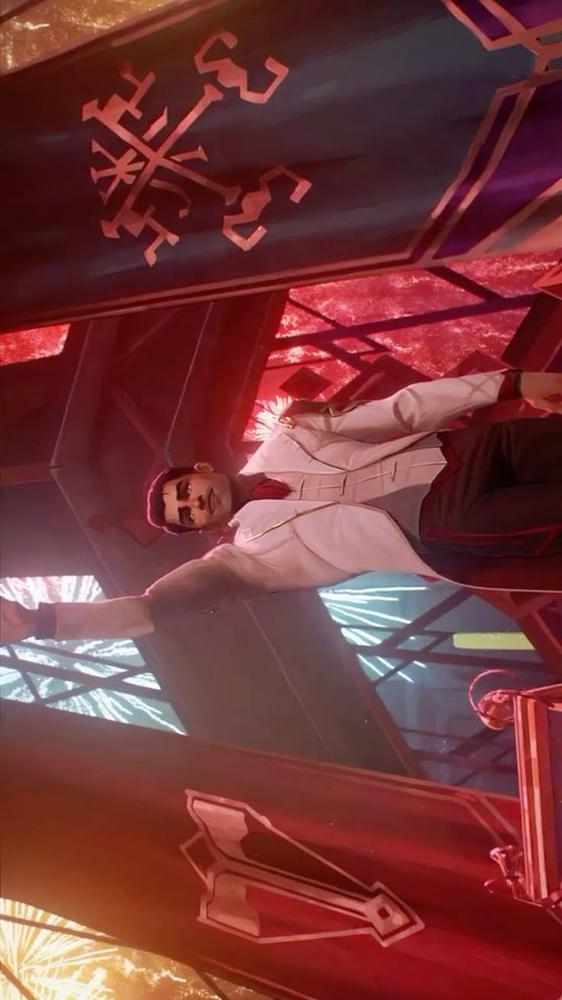
E4 ∙ Happy Progress Day!
Sat, Nov 13, 2021With Piltover prospering from their tech, Jayce and Viktor weigh their next move. A familiar face re-emerges from Zaun to wreak havoc.
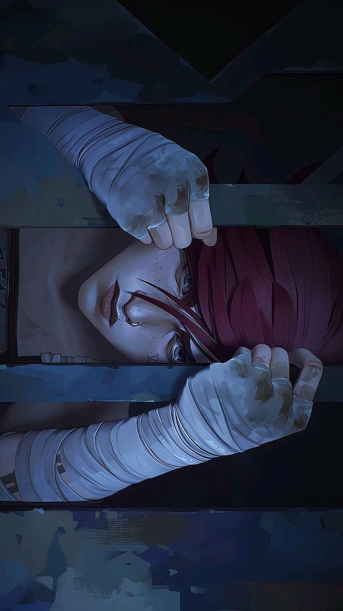
E5 ∙ Everybody Wants to Be My Enemy
Sat, Nov 13, 2021Rogue enforcer Caitlyn tours the undercity alongside Vi to track down Silco. Jayce puts a target on his back trying to root out Piltover corruption.
sheet 03Act III
E7 ∙ The Boy Savior
Sat, Nov 20, 2021Caitlyn and Vi meet an ally in Zaun's streets and head into a frenzied battle with a common foe. Viktor makes a dire decision.
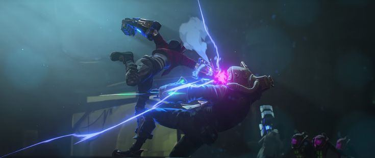
E8 ∙ Oil and Water
Sat, Nov 20, 2021Disowned heir Mel and her visiting mother trade combat tactics. Caitlyn and Vi forge an unlikely alliance. Jinx undergoes a startling change.
Arcane — Season One Awards & critical reception, 2022
- Best Animated TV Production
- Best FX Animation
- Best Character Animation
- Best Character Design
- Best Direction
- Best Music
- Best Production Design
- Best Storyboarding
- Best Writing
- Outstanding Animated Program
- Outstanding Individual Achievement in Animation — Background Design
- Outstanding Individual Achievement in Animation — Color Script
- Outstanding Individual Achievement in Animation — Art Direction
Netflix Original · Nov 9, 2024
Arcane
League — Of — Legends
Season II
The council chamber is rubble and the city hasn't decided what comes next. Jinx is gone, or she isn't — nobody agrees which. Vi wears the uniform but not the certainty. In Zaun, grief curdles into something that looks a lot like leadership, and in Piltover, the people who caused the fracture are the ones being asked to fix it. This is the season that stops asking who's right and starts asking what's left.
09
Episodes
03
Acts
~42m
Avg. Runtime
9.3
Imdb
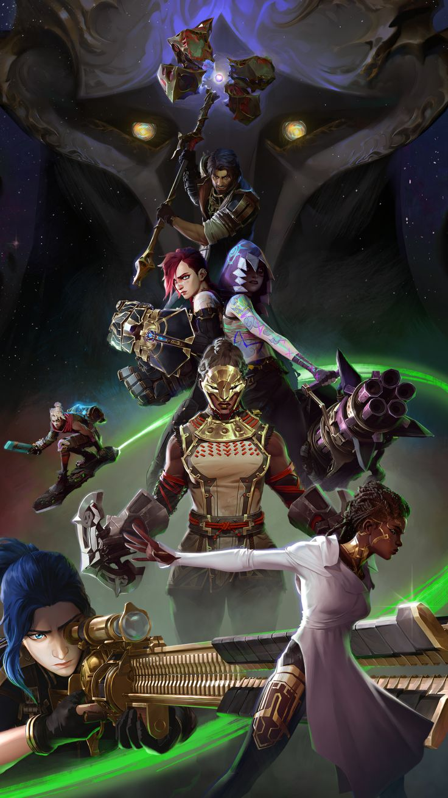
Trailers
Season 2Netflix Original
Arcane — Season II
Episodes
Case File — Season Two
09 Episodes
ACT I
Grief chooses a side
E1–E3 · Nov 9, 2024
ACT II
Shimmer comes due
E4–E6 · Nov 16, 2024
ACT III
No side left untouched
E7–E9 · Nov 23, 2024
sheet 01Act I
E1 ∙ Heavy Is the Crown
Sat, Nov 9, 2024Vi and Caitlyn wrestle with how best to respond in the wake of a terrible tragedy that claims lives and escalates tensions between the twin cities.
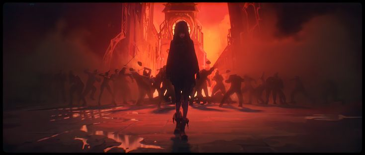
E2 ∙ Watch It All Burn
Sat, Nov 9, 2024With Piltover ready for war, the Undercity weighs its options. Jinx lies low and plots her next move. A pivotal conversation takes place.
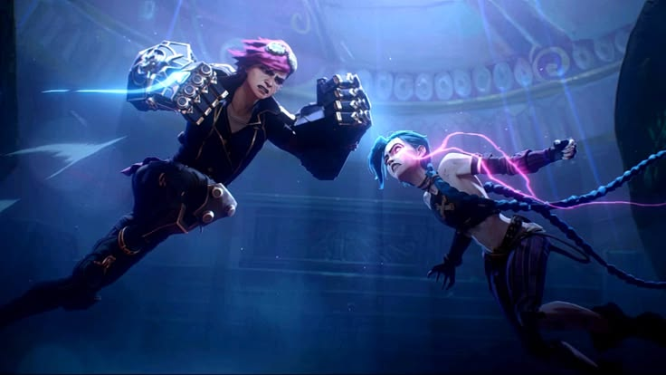
E3 ∙ Finally Got the Name Right
Sat, Nov 9, 2024Caitlyn doubles down on her hunt for Jinx. Ambessa accepts a fateful meeting. Changes in Zaun lead to a shocking discovery.
sheet 02Act II
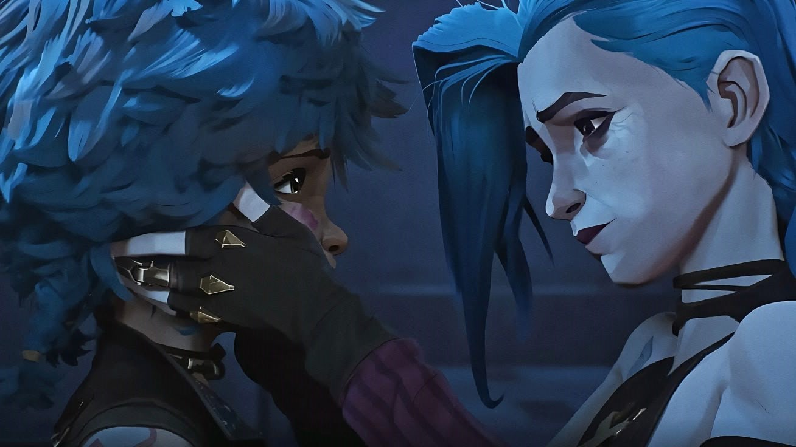
E4 ∙ Paint the Town Blue
Sat, Nov 16, 2024As rumors of Jinx's return swirl, Ambessa pursues her target with renewed enthusiasm. Jinx and Sevika go undercover and into the belly of the beast.
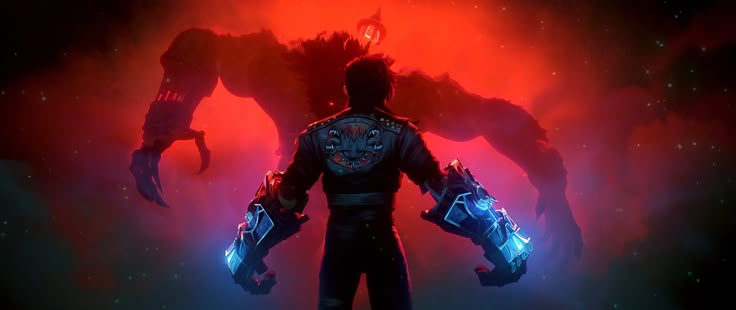
E5 ∙ Blisters and Bedrock
Sat, Nov 16, 2024Vi awakens to surprising news. An unsettling reunion isn't what it seems. Caitlyn uncovers the origins of Shimmer.
sheet 03Act III
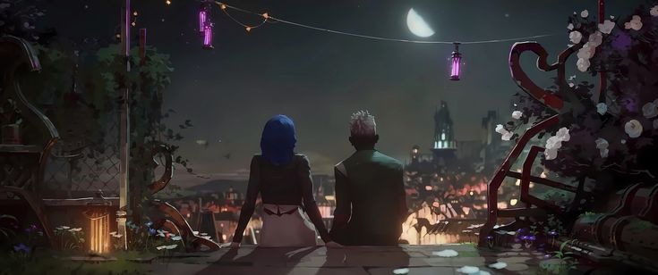
E7 ∙ Pretend Like It's the First Time
Sat, Nov 23, 2024A moment of darkness, a moment of light - and a vision of what could have been.
E8 ∙ Killing Is a Cycle
Sat, Nov 23, 2024A brewing storm fuels a series of startling transformations. Elsewhere, the spark of rebellion still burns.
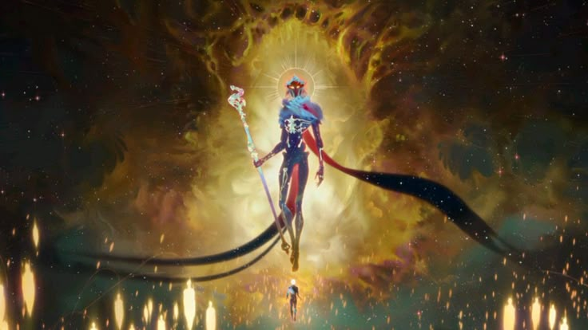
E9 ∙ The Dirt Under Your Nails
Sat, Nov 23, 2024In a world where magic and science collide, destinies intertwine as an all-out war for power and vengeance erupts.
Arcane — Season Two Awards & critical reception, 2025
- Outstanding Achievement for Animated Effects in a Television/Media Production
- Outstanding Achievement for Character Animation in a Television/Media Production
- Outstanding Achievement for Character Design in a Television/Media Production
- Outstanding Achievement for Direction in a Television/Media Production
- Outstanding Achievement for Music in a Television/Media Production
- Outstanding Achievement for Production Design in a Television/Media Production
- Outstanding Achievement for Writing in a Television/Media Production
- Outstanding Animated Program
- Outstanding Sound Editing for an Animated Program
- Outstanding Individual Achievement in Animation — Background Design
- Outstanding Individual Achievement in Animation — Color
Legacy
What Remains
Arcane closes with its second season because Christian Linke and Alex Yee built the ending in from the start, not because Netflix pulled the plug. Nine years with Vi, Jinx, Jayce, and Viktor was enough to tell one story all the way through — stretching it further, in Linke's own words, would have been irresponsible.
Act Three still split the audience that had waited three years for it — some felt the compression cost the finale room to breathe, and the creators have said as much themselves. But a story that ends on its own terms, imperfectly, has always aged better than one that overstays it.
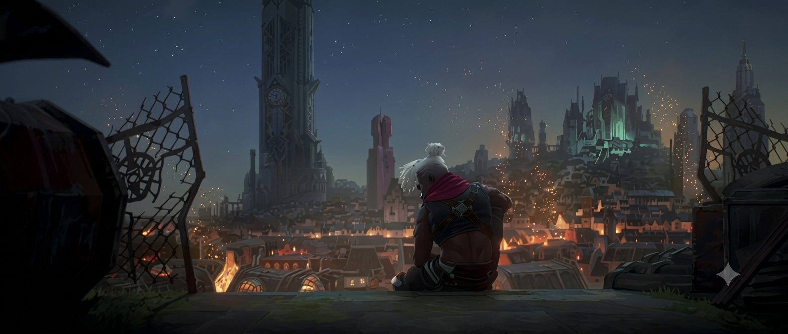
Animation
Fortiche painted Arcane by hand and wrapped that brushwork around 3D rigs, treating each frame like a canvas instead of a keyframe. That hybrid process became the show's fingerprint and pushed the rest of the industry to ask what a big-budget animated series could look like outside the usual house styles. Season Two closed at a 100% Tomatometer score, and critics kept returning to the same point: the direction and color work were carrying as much of the story as the script.
Runeterra
Arcane was written as a first chapter, not a finished catalogue. Linke has called it the beginning of a longer partnership with Fortiche, with future stories already positioned in Runeterra regions like Noxus, Ionia, and Demacia. None of it has a release date yet — the point was never the schedule, it was that Piltover and Zaun were only ever the opening move.
Impact
A series built from a video game had never been given this level of craft, and its reception reset expectations for what an adaptation is allowed to be. It also reached people who don't watch animation by habit, which is a harder audience to hold than genre fans. Years after the premiere, its cast is still being drawn, debated, and quoted — the clearest evidence a story outlasted its release window.
Piltover and Zaun are finished telling their story.
Runeterra isn't.